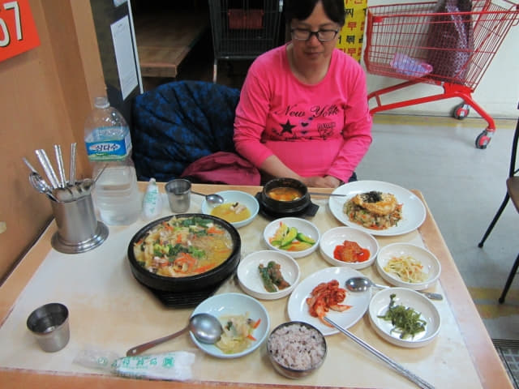

我們在下午五時十分離開釜山三樂江邊公園, 沿天橋及廣場路一直走, 穿過釜山沙上客運站, 再往前走一會, 於下午六時五分來到沙上區 路易斯酒店 (LOUIS Hotel Sasang)。辦理了入住手續, 取回寄放的行李, 乘電梯往 7F 房間。
開門一看。嘩~~~~ 房間很寬闊! 非常舒適豪華呢! 以這樣的便宜的價錢, 簡直大超值啦! 想不到在旅程最後的一晚, 竟然給我們這驚喜, 令這難忘的旅程更加難忘! [看價錢]
洗手間也十分寬闊舒適。
沙上區 路易斯酒店 (LOUIS Hotel Sasang) 名片

再往 Home plus 6F 美食街 經濟晚餐
到房間放置好行李, 休息一會, 又是晚餐時間, 也是這韓國春天之旅最後一個晚餐。因中午發覺 Home plus 6F 美食街的食物款式很多, 價錢又便宜, 正合我們心意, 便毫不考慮再往那裡用晚餐。
於晚上七時半走出酒店, 步行一會便來到 Home plus 百貨大樓, 乘電梯往 6F 美食街, 因中午已經在美食街打了兩個圈, 發覺我們午餐的店舖最合我們胃口, 便同樣在這裡吃晚餐。
我叫了一客海鮮湯鍋, 超大鍋的, 價錢是 8,000 韓元。
她叫了一客什錦蛋炒飯, 價錢是 6,000 韓元。
韓國春天濟州及本島南部二十二天之旅最後的一個晚餐, 尚算豐富啦!

海鮮湯鍋很鮮甜, 用料十足, 份量很大; 什錦蛋炒飯味道一般, 沒什麼特別。晚餐吃得飽飽的, 十分滿足。
吃完晚餐, 離開 Home plus 百貨大樓, 輕軌掛法 Renecite 站前的廣場有一位年輕人在玩腳踏車雜技。
沿昏暗道路慢慢走往釜山沙上客運站。

不一會便來到釜山沙上客運站, 一樓大堂有一間售賣家庭日用品及文具的店舖, 品種很多, 很多在香港都沒有的, 價錢也十分便宜, 便買了少許實用的用品 — 韓式鞋墊、粘門膠帶等等。近十多年都再沒有買擺設的紀念品了, 都是買一些實用的用品, 作為旅程的紀念品。
穿過釜山沙上客運站, 再往前走一會便返回沙上區路易斯酒店。
乘電梯返回 7F 房間, 差不多晚上九時。時間匆匆, 今晚是這旅程在韓國最後的一晚了, 明天便乘下午三時三十分的飛機離開, 又結束了這個愉快難忘的春天假期。